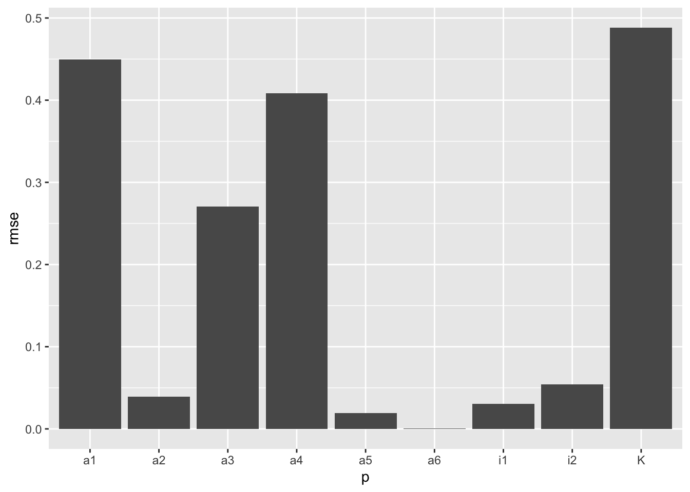
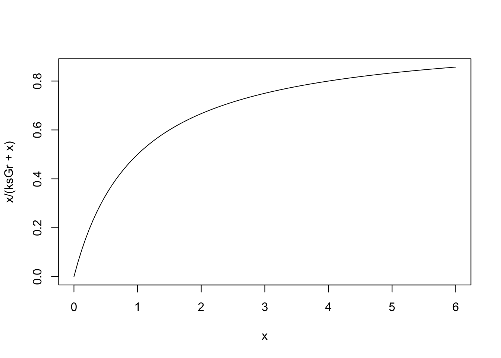
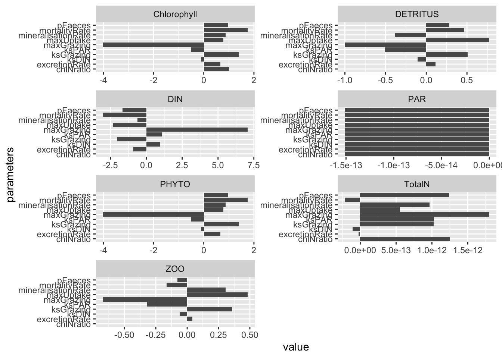
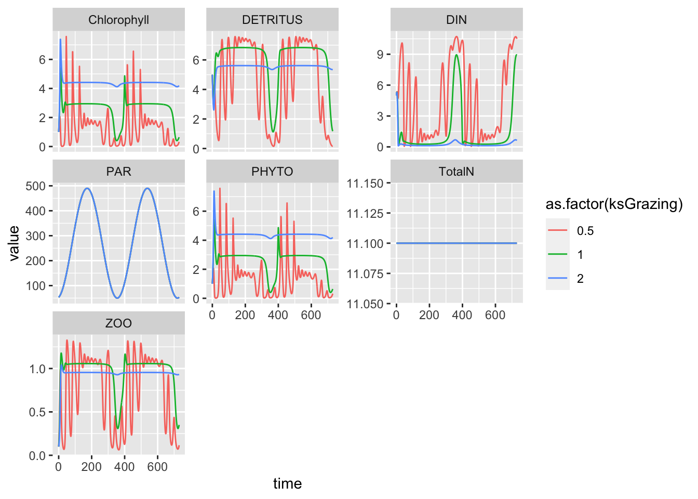

6 Model Sensitivity
Reading: Chapter 11, Soetart and Herman (2009)
Model sensitivity is part of model testing and validation (Soetaert and Herman 2009). In this chapter, we assess model sensitivity, that is, the sensitivity of model outcoxmes to model inputs. Sometimes, those inputs are small perturbations of the state variables, and we often refer to this as local stability analysis. In contrast, here we investigate the sensitivity of model output to the values of parameters we use as input. This is what we do when we calculate the sensitivity and elasticity of a demographic projection matrix. One of the reasons we assess the sensitivity of model output to the values of parameters is to determine which parameters are most important in driving the dynamics of the model. Identifying the most important parameters
- provides understanding of the model dynamics
- guides future research in making sure we have good estimates of those particular model parameters.
Stability and sensitivity are, broadly speaking, opposites of each other. Stability is the tendency to remain intact, to persist, or return to a steady state, following a perturbation. Ecologists have a large lingua jargona to describe different types of stability. Sensitivity is the degree to which model outputs tend to deviate if one or more of their inputs change.
Before we begin, it is worth listing questions we should ask ourselves about any model.
- Testing Solution Correctness
- Is there an analytical solution against which we can check the model output?
- Is there known data with which we can compare the output?
- Internal Logic
- Do the state variables remain in their expected range (e.g., biomass >= 0)?
- If it is a closed system, do the state variables remain at zero if they are all set to zero?
- Is mass balance preserved?
- Model Verification and Validity. Our data and model don’t agree. How do we proceed?
- Are the data accurate and/or precise?
- Does the structure of the model approximate the important processes?
- Do the parameter values correspond to actual rates?
These are important questions. We would also like to know how certain we need to be about parameter values. Model output can be very insensitive or very sensitive to small changes in the values of model parameters. Sensitivity analysis helps us pinpoint parameters to which model output might be most sensitive, that is, parameters that can have big effects on model outcomes.
6.1 Model Sensitivity
How robust or stable is our model to inevitable untruths? Is our model likely to give approximately correct answers given only approximately correct structure and parameters?
There are two forms of sensitivities that we can assess:
- responses to changes in parameters
- responses to changes in state variables
Also, we can assess global or local behavior:
- Global changes
- broad, systematic variation in a parameter.
- permanence - do all state values remain > 0?
- Local changes
- responses to very small changes in parameters.
- responses to very small changes to state variables at equilibria.
6.2 Local sensitivity
Here we will assess the local sensitivity to parameters in our model of the Hubbard Brook nitrogen cycle.
To assess the local sensitivity of our model to parameters, we will use code that does the following:
- Create a baseline, or reference data set of model output using our original parameter values.
- To assess long term average behavior, we typically run the model a long time, throw away early transient dynamics. We then consider the remaining output as our baseline.
- We could also assess short term responses instead, if we had a particular scenario in mind.
- Create a new parameter set that changes one parameter by a little bit. This deviate, or “little bit”, could be a very small percentage of the original value, or a small fixed value.
- Rerun the model using
- the new parameter set, and
- an initial state that is the same as the first state of the baseline.
- Calculate the difference between the baseline and new model outputs at each time step. This “difference” may take several forms, such as the absolute difference, the difference relative to the original, the squared difference, or others.
- Summarize the differences across time using the mean or median, or something else.
- Rinse and repeat steps 1-5, for each parameter in the model.
- Save the results in a form we can use.
The above steps are an example of pseudocode. Pseudocode is a series of steps written in plain language that describe intermediate steps toward achieving some goal. The function we use follows these steps. It relies heavily on code in Chap. 11 of Soetart and Herman (2009). Below I describe arguments of the function. Let’s start by loading it.
Obtain a copy of sensitivity.R and sens.fig.R and put them in an appropriate directory. I use a folder called code. The R function source() runs an R script; if the script defines a function (as these do), you will then be able to use that function.
## This script loads a function called, oddly enough, "sensitivity"
source("code/sensitivity.R")
## ask for the arguments of the function
args("sensitivity")## function (y.initial, times, func, parms, burnin = NULL, tiny = 0.001,
## dev.type = "normalized", summary.type = "arithmetic_mean")
## NULLSome of the arguments are the same as for ode().Here is a bit of how the function works:
y.initialis a named vector the starting point for the ODEs. By ‘named’, we mean that the elements have names, as iny=c(A=1, B=2).timesis the vector of times for which the user wants to assess sensitivity.funcis the system of ODEs written for use withode().parmsis the vector of parameter values used infunc.burninis the number of initial time steps to throw away. NULL causes the function to throw away the first half. Otherwise set an actual number (integer).tinyis the proportional deviation to the parameter (0.1 = 10% increase, -0.1 = 10% decrease).summary.typerefers to how the time series of deviates are summarized. The current options are ‘arithmetic_mean’, ‘mean_absolute’ (the arthmetic means of absolute values of the deviates), or ‘RMSE’ (the root mean squared error).dev.typerefers to the type of sensitivity, either the simple ‘deviate’ (dy), ‘sensitivity’ (dy/dp), ‘elasticity’ (d(log[y])/d(log[p])), ‘normalized’ ( [dy/y] / [dp/p]). Default is ‘normalized’ which is nearly identical to ‘elasticity’.
The function returns a named list containing several elements:
deviation.summaryis a data frame of the summarized deviates for each parameter (rows), for each state variable (columns).dev.typeis the type of deviate used.summary.typeis the type of summary of the time series used.tinyis size of proportional perturbation to parameterssens.lista list of each of the original time series.
6.3 Assessing sensitivity in a nitrogen budget model
Consult our previous chapter on the nitrogen budget of Hubbard Brook, watershed 6. If you have not already done so, make a script that contains nothing but the bormann2 function. Copy the block of text where we define it, paste it into a new R script, and save it as bormann2.R.
Next we prepare our workspace, by removing extraneous objects.
rm( list = ls() ) # delete (remove) everything in the workspace.The next line of code loads and runs two files.
## I put the script in a folder called 'code' that resides inside
## my working directory. The following line of code runs the code in
## the script, and the script is located at code/bormann2.R
source("code/bormann2.R")
## if you want to make sure that it loaded the right thing, type
## bormann2 on your command line, or highlight the word, and run it with
## Control-Enter
## We also load code to calculate the sensitivities,
## and also to create a time series figure of the deviations.
source("code/sensitivity.R") # sensitivities of all variables
source("code/sens_fig.R") # graph time series of sensitivity of one variableNext we begin to run it.
params <- c(
i1 = 6.5, # precip
i2 = 14.2, # fixation
a1 = 79.6 / (26 * 532), # uptake
a2 = (6.6 + 0.8) / 532, # throughfall and inorganic exudates
a3 = (54.2 + 2.7 + 0.1 + 6.2 ) / 532, # litter, throughfall, organic exudates
a4 = 69.6 / 4700, # net mineralization
a5 = 3.9 /26, # export from available
a6 = 0.1/4700, #export from bound
K=600
) # close parentheses
initial.state <- c(V = 532, A = 26, B = 4700)
t <- seq(from = 0, to = 500, by = 1)Next we run the sensitivity analysis. We start with parameters and initial conditions.
params <- c(
i1 = 6.5, # precip
i2 = 14.2, # fixation
a1 = 79.6 / (26 * 532), # uptake
a2 = (6.6 + 0.8) / 532, # throughfall and inorganic exudates
a3 = (54.2 + 2.7 + 0.1 + 6.2 ) / 532, # litter, throughfall, organic exudates
a4 = 69.6 / 4700, # net mineralization
a5 = 3.9 /26, # export from available
a6 = 0.1/4700, #export from bound
K=600
) # close parentheses
initial.state <- c(V = 532, A = 26, B = 4700)
t <- seq(from = 0, to = 500, by = 1)Next we do the sensitivity analysis. We will start with a graph, often a good place to start. The graph will show the actual deviations that arise when we alter each parameter one at a time by one percent.
out <- sens_fig("A", y.initial=initial.state,
times=0:1000, func=bormann2, parms=params,
burnin=0, tiny=0.01, relative=FALSE )## [1] 1
## [1] 2
## [1] 3
## [1] 4
## [1] 5
## [1] 6
## [1] 7
## [1] 8
## [1] 9ggplot(out, aes(Time, y, colour=Perturbation)) + geom_line() + facet_wrap(~Parameter, scales="free_y")Figure 6.1: Observed responses of the available N pool to a one percent change to each parameter.
Note two features of these graphs. First, the change due to the system dynamics is relatively large and so obscures the change due the sensitivity. Second, note that sometimes a smaller parameter (here in blue) results in a higher value of the state variable.
It might be more informative the (i) focus on model output after it has approach the steady state, and (ii) examine the relative departure from the reference state. Relative change of 1.0 would mean that for a 1% change in a parameter, the state variable would also change by 1%.
out <- sens_fig("A", y.initial=initial.state,
times=0:1000, func=bormann2, parms=params,
burnin=500, tiny=0.01, relative=TRUE )## [1] 1
## [1] 2
## [1] 3
## [1] 4
## [1] 5
## [1] 6
## [1] 7
## [1] 8
## [1] 9ggplot(out, aes(Time, y, colour=Perturbation)) + geom_line() + facet_wrap(~Parameter, scales="free_y")Figure 6.2: Relative responses of the available N pool to a one percent change to each parameter. Note big differences in the values of the y-axes.
These graphs show that the state variable responds very consistently through time. In systems with more complicated dynamics, that will not always be the case.
Next, we can assess each of the state variables and average across time.
b1 <- sensitivity(y.initial=initial.state, times=t,
func=bormann2, parms=params,
dev.type='normalized',
summary.type="arithmetic_mean")The output generates a list with seven elements, but to see this structure you need to use str.
## Peak at the structure of the output
str(b1)## List of 7
## $ deviation.summary:'data.frame': 9 obs. of 5 variables:
## ..$ parameters: chr [1:9] "i1" "i2" "a1" "a2" ...
## ..$ V : num [1:9] 3.71e-05 2.92e-05 2.94e-05 -2.01e-07 -2.68e-04 ...
## ..$ A : num [1:9] 0.0648 0.1042 -0.9535 0.0831 0.5228 ...
## ..$ B : num [1:9] 3.79e-05 1.23e-01 3.73e-05 9.81e-06 6.15e-01 ...
## ..$ total : num [1:9] 0.000319 0.110914 -0.004113 0.000371 0.556306 ...
## $ dev.type : chr "normalized"
## $ summary.type : chr "arithmetic_mean"
## $ burnin : NULL
## $ tiny : num 0.001
## $ parms : Named num [1:9] 6.5 14.2 0.00575 0.01391 0.1188 ...
## ..- attr(*, "names")= chr [1:9] "i1" "i2" "a1" "a2" ...
## $ sens.list :List of 4
## ..$ V : num [1:251, 1:9] 0.00 4.51e-06 1.04e-05 1.61e-05 2.32e-05 ...
## .. ..- attr(*, "dimnames")=List of 2
## .. .. ..$ : NULL
## .. .. ..$ : chr [1:9] "i1" "i2" "a1" "a2" ...
## ..$ A : num [1:251, 1:9] 0 0.0635 0.0654 0.0654 0.0654 ...
## .. ..- attr(*, "dimnames")=List of 2
## .. .. ..$ : NULL
## .. .. ..$ : chr [1:9] "i1" "i2" "a1" "a2" ...
## ..$ B : num [1:251, 1:9] 0.00 5.70e-08 1.99e-07 8.61e-07 5.71e-06 ...
## .. ..- attr(*, "dimnames")=List of 2
## .. .. ..$ : NULL
## .. .. ..$ : chr [1:9] "i1" "i2" "a1" "a2" ...
## ..$ total: num [1:251, 1:9] 0 0.000277 0.000286 0.000287 0.000292 ...
## .. ..- attr(*, "dimnames")=List of 2
## .. .. ..$ : NULL
## .. .. ..$ : chr [1:9] "i1" "i2" "a1" "a2" ...
## - attr(*, "class")= chr [1:2] "sensitivity" "list"However, if you just type b1, it will spit out just the summary of the deviations.
b1## parameters V A B total
## 1 i1 3.705840e-05 0.0647565594 3.790716e-05 0.0003194970
## 2 i2 2.918269e-05 0.1041528053 1.225100e-01 0.1109138069
## 3 a1 2.940582e-05 -0.9535105388 3.728004e-05 -0.0041134439
## 4 a2 -2.014821e-07 0.0831473008 9.812943e-06 0.0003706962
## 5 a3 -2.681428e-04 0.5227930990 6.145104e-01 0.5563064925
## 6 a4 2.992411e-04 0.2238495782 -7.329505e-01 -0.6598425953
## 7 a5 -2.021901e-05 -0.0414509485 -5.222392e-06 -0.0001870163
## 8 a6 2.264389e-06 -0.0008868526 -1.040165e-03 -0.0009414854
## 9 K 8.470909e-01 -0.3190643353 4.950298e-01 0.5246217855If we want to use this summary, however, we need to specify b1$deviation.summary
Next we would like to graph the summaries, for ease of interpretation.
b1L <- b1$deviation.summary %>%
pivot_longer(cols="V":"total")
ggplot(data=b1L, aes(x=parameters, y=value)) + geom_col() +
facet_wrap(~name, scales="free_y")
Figure 6.3: Model output is more sensitive to some parameters than others. In addition, different state variables are respond differently to different parameters. Note that the y-axis differs among the state variables.
We can also summarize across state variables, so that we have one effect of each parameter. Here we use just V, A, and B, and calculate the root mean squared error.
rmse.SV <- b1$deviation.summary %>%
select(V:B) %>%
apply(MARGIN=1, function(x) sqrt( x*x / 3 ))
SV <- b1$deviation.summary %>%
select(V:B)
rmse.SV <- t( apply(SV, MARGIN=1, function(x) {
m <- mean(x)
sq <- (x-m)^2
sqrt( mean( sq ))
}) )
rmse <- data.frame(p=b1$deviation.summary$parameters, rmse=as.numeric(rmse.SV))
qplot(p, rmse, data=rmse, geom="col")
So,…into what should we direct our effort? What data do we want most want to collect? These sensitivities are likely to help us direct our attention where it would be most useful.
6.4 Sensitivity in an aquatic ecosystem
Here we revisit the aquatic ecosystem model, NPZD, of Soetaert and Herman.
We load it, and define the parameters and initial state. Obtain a copy of the model, NPZD.R.
## load the model
source("code/NPZD.R")
#-----------------------#
# define the model parameters: #
#-----------------------#
parameters<-c(maxUptake =1.0, # /day
ksPAR =140, # muEinst/m2/s
ksDIN =0.5, # mmolN/m3
maxGrazing =1.0, # /day
ksGrazing =1.0, # mmolN/m3
pFaeces =0.3, # -
excretionRate =0.1, # /day
mortalityRate =0.4, # /(mmolN/m3)/day
mineralisationRate =0.1, # /day
chlNratio =1) # mgChl/mmolN
#-------------------------#
# the initial conditions: #
#-------------------------#
state <-c(PHYTO =1, # state variable initial conditions, units mmolN/m3
ZOO =0.1,
DETRITUS=5.0,
DIN =5.0)Next we run the dynamics for two years.
times <- 0:730
out <- ode(state, times, NPZD, parameters)
out %>%
as.data.frame() %>%
pivot_longer(cols=-time, names_to="State.var", values_to="value") %>%
ggplot(aes(time, value)) + geom_line() + facet_wrap(~State.var, scale="free_y")
Next we check model sensitivity.
outf <- sens_fig("DIN", y.initial=state,
times=0:1000, func=NPZD, parms=parameters,
burnin=0, tiny=0.01, relative=TRUE )## [1] 1
## [1] 2
## [1] 3
## [1] 4
## [1] 5
## [1] 6
## [1] 7
## [1] 8
## [1] 9
## [1] 10ggplot(outf, aes(Time, y, colour=Perturbation)) +
geom_line() + facet_wrap(~Parameter, scales="free_y")
In this figure, we see that sensitivity varies through time. For most parameters, it can be small at some times and quite large at other times. We can see how sensitivity can depend to a huge degree on the time points at which we evaluate that sensitivity.
Here we summarize those across time.
# args(sensitivity)
outd <- sensitivity(state, times, NPZD, parameters,
dev.type = "normalized",
summary.type = "arithmetic_mean")
outd$deviation.summary %>%
pivot_longer(cols=-parameters) %>%
ggplot(aes(x=parameters, y=value)) + geom_col() +
facet_wrap(~name, ncol=2, scales="free") +
coord_flip() # Flip x and y so we can see the parameter names
Which parameters appear to have the greatest effect on model predictions?
6.5 Letting Sensitivity Analysis Guide Next Steps
So, let’s say you find that the half saturation constant for grazing rate of phytoplankton by zooplankton, \(ks_{\mathrm{Grazing}}\), is relatively important in governing several state variables. You also believe that it is very poorly estimated. Because you believe that your estimate is very uncertain, you should probably investigate and reveal to your collaborators the effect of wide variation in this parameter.
. Make sure that you have exhausted your own data in its ability to estimate that constant. Perhaps we’ll explore that elsewhere. Make sure that you have exhausted the literature as you combed through older papers that might have estimates. * Make sure that you’re exhausted generally.
One of the trickiest aspects of gathering parameter estimates from the literature or from other people’s data is converting their units to units you need.
- What units do you need?
- Are you trying to estimate a flux (the mass of material flowing from one compartment to another per unit time)?
- Are you trying to estimate a mass-specific rate constant?
- What do others provide?
- Estimates of moles or grams?
- Molecular or elemental quantities (e.g., NH\(_4\) or N)?
- All or at least the important sources of elemental quantities (NH\(_4\) and NO\(_3\) vs. just one)?
- Per unit area or volume?
- What is their time scale?
Conversion between what others provide and what you need can bee tricky, but it is essential to get it right.
Assuming that you have worked hard at the above tasks but are still more in the dark than you would like, what is left to you? What folks often do is to rely on first principles and logical constraints to find upper and lower limits to the parameter, and display or summarize numerical the variation in outputs that result. The local sensitivity analysis showed us the potential effects of variation in parameters. Here what we want to do is determine for ourselves the potential variation in the parameter itself, and then use simulation to discover the consequences of the a priori variation in the parameter.
So, our current estimate of the grazing half saturation constant, \(ks_{\mathrm{Grazing}}\), is 1.0. If we examine NPZD(), we find that the shape of this resource limitation function:
ksGr <- 1
## let Phytoplankton be x, and vary between 0 and 6 mmolN/m3
## because that is the approximate range we see in the dynamics
curve(x/(ksGr + x), 0, 6)
If we increase or decrease the half saturation constant, what will we see?
ksGr <- c(.5, 1, 2)
# let Phytoplankton vary more
curve(x/(ksGr[1] + x), 0, 10)
curve(x/(ksGr[2] + x), 0, 10, add=TRUE, lty=2)
curve(x/(ksGr[3] + x), 0, 10, add=TRUE, lty=3)
legend("bottomright", legend=paste(ksGr), lty=1:3)
Given this range, is there some basis for selecting one of these? Recall that this is multiplied by the maximum grazing rate (and zooplankton); therefore, we might want to ask ourselves how that maximum rate was determined. For instance, was it estimated at moderate phytoplankton concentrations or when phytoplankton were truly unlimited? If we have some data from the literature suggesting particular values, we might use these as maxima and minima, or we might go beyond them.
Sometimes, all we have is a guess. If a parameter appears to be important, then we might simply pick a value and then double it and halve it, or investigate 10-fold increases. Here we do the former.
- Let the half saturation constant vary between 0.5 and 2.
- Generate the dynamics.
- Plot outputs together.
## reference run
## make a copy of the parameters
myP <- parameters
## integrate and make a data frame
out_1 <- as.data.frame( ode(state, times, NPZD, myP) )
## add identifier
out_1 <- out_1 %>%
## make a new column
mutate(ksGrazing = 1.0) # code as text
## Change the half saturation constant
myP["ksGrazing"] <- 0.5
##rerun and make a data frame
out_0.5 <- as.data.frame( ode(state, times, NPZD, myP) )
## add identifier
out_0.5 <- out_0.5 %>%
## make a new column
mutate(ksGrazing = 0.5) # code as text
## Change the half saturation constant
myP["ksGrazing"] <- 2
## rerun and make a dataframe
out_2<- as.data.frame( ode(state, times, NPZD, myP) )
## add identifier
out_2 <- out_2 %>%
## make a new column
mutate(ksGrazing = 2.0) # code as text
out.all <- rbind(out_0.5, out_1, out_2)
out.all %>%
pivot_longer(cols=PHYTO:TotalN, names_to="State.var", values_to="value") %>%
ggplot(aes(time, value, colour=as.factor(ksGrazing))) + geom_line() + facet_wrap(~State.var, scale="free_y")
Well, then… . Aren’t you glad you tried that!
6.5.1 Your turn
Take a stab at varying something in your preferred model. You can use anyone’s data - we are all in this together. Just give proper attribution.
You can also come up with creative ways to quantify an output difference from a reference in an output. Often, we come up with a useful quantitative metric, run a larger number of scenarios (e.g., letting a parameter take 20 different values), and then plot the relation between the parameter and your quantitative measure of difference in output.
Be creative. See what you find.